📖 配置与使用指南
从安装到高级功能的完整教程，帮助你充分发挥 RemindAI 的能力。
概览
RemindAI 是一款开源桌面 AI 助手，为大模型提供完整的 ToolShell（工具外壳），让 AI 不仅能聊天，还能直接操作文件、执行代码、调用外部工具、管理记忆。
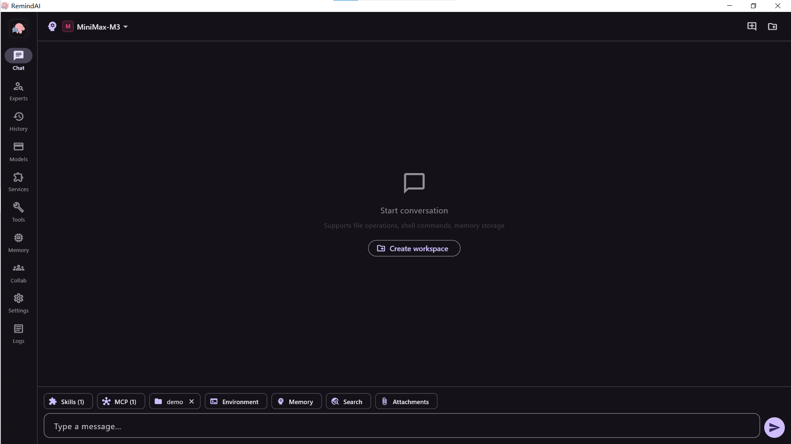

界面架构
RemindAI 采用左侧导航栏 + 右侧内容区的经典布局：
| 模块 | 功能说明 |
|---|---|
| 💬 对话 | 核心聊天界面，支持 ToolShell 工具调用、多模态图文、推理链展示 |
| 🎨 模型 | 管理 AI 模型卡片，配置 API Key、Base URL、协议类型 |
| 🔌 MCP | MCP 服务器管理，支持 stdio / SSE / HTTP 三种传输 |
| 🧠 记忆 | 查看和管理向量记忆，Qdrant + SQLite 双写存储 |
| 📦 技能 | 导入/管理技能包，ZIP 一键导入 |
| 🔍 搜索 | 配置 Web 搜索引擎 API（Tavily / Brave / 百度） |
| 👤 专家 | 创建/管理领域专家角色，绑定技能和系统提示词 |
| ⚙️ 设置 | 主题、语言、存储路径、嵌入模型、Qdrant 等全局配置 |
安装与启动
RemindAI 目前正式支持 Windows，Linux 和 macOS 可通过源码编译使用。
方式一：下载安装包
前往 GitHub Releases
访问 GitHub Releases 页面，下载最新版本的 Windows 安装包。
运行安装程序
双击安装包，按向导完成安装。安装完成后在桌面或开始菜单找到 RemindAI 启动。
配置模型
首次启动后，进入「模型」页面添加你的第一个 AI 模型（见下方模型配置章节）。
方式二：从源码构建
build/ 目录下。Linux 需额外安装 libsqlite3-dev 系统依赖。
模型配置
RemindAI 原生支持 OpenAI、Anthropic、Gemini 三种协议，你可以添加多个模型并随时切换默认模型。
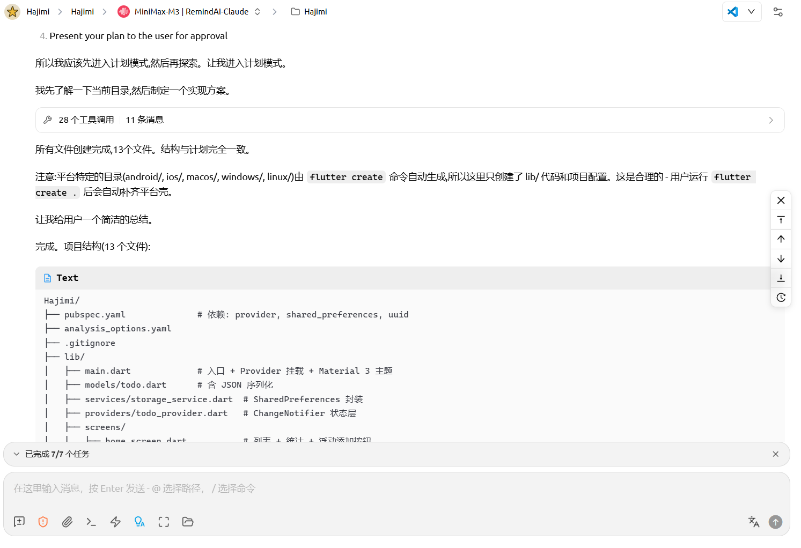
添加模型
进入模型页面
点击左侧导航栏的「🎨 模型」按钮，进入模型管理页面。点击右下角的 + 按钮打开添加对话框。
选择协议类型
在「协议类型」下拉框中选择 OpenAI、Anthropic 或 Gemini。协议决定了请求格式和模型检测方式。
填写配置信息
填写 名称、Base URL、API Key。不同协议的 URL 格式不同（见下表）。
检测并选择模型
填写 URL 和 Key 后，点击右侧的 🔄 按钮自动检测可用模型列表，然后从下拉框中选择目标模型。也可以手动输入模型 ID。
各协议 Base URL 参考
| 协议 | 默认 Base URL | 说明 |
|---|---|---|
| OpenAI | https://api.openai.com/v1 |
兼容所有 OpenAI 格式 API（含第三方中转） |
| Anthropic | https://api.anthropic.com |
Claude 系列模型，支持 thinking 推理链 |
| Gemini | https://generativelanguage.googleapis.com/v1beta |
Google Gemini 系列，支持多模态图文 |
对话与使用
对话是 RemindAI 的核心功能。在这里你可以与 AI 自然语言交流，AI 会根据需要自动调用工具完成复杂任务。
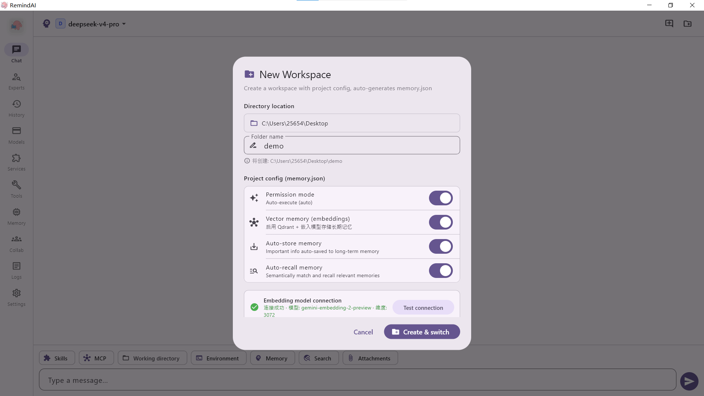
基本使用
- 在左侧导航栏选择「💬 对话」进入聊天界面
- 确保已配置至少一个模型（见模型配置章节）
- 在底部输入框输入问题或指令，按 Enter 发送
- AI 将流式返回回复，如果需要执行工具，会在回复中展示工具调用卡片
工作目录
你可以在对话中指定工作目录，AI 的文件操作将在该目录下进行。这让 AI 能够直接操作你的项目代码。
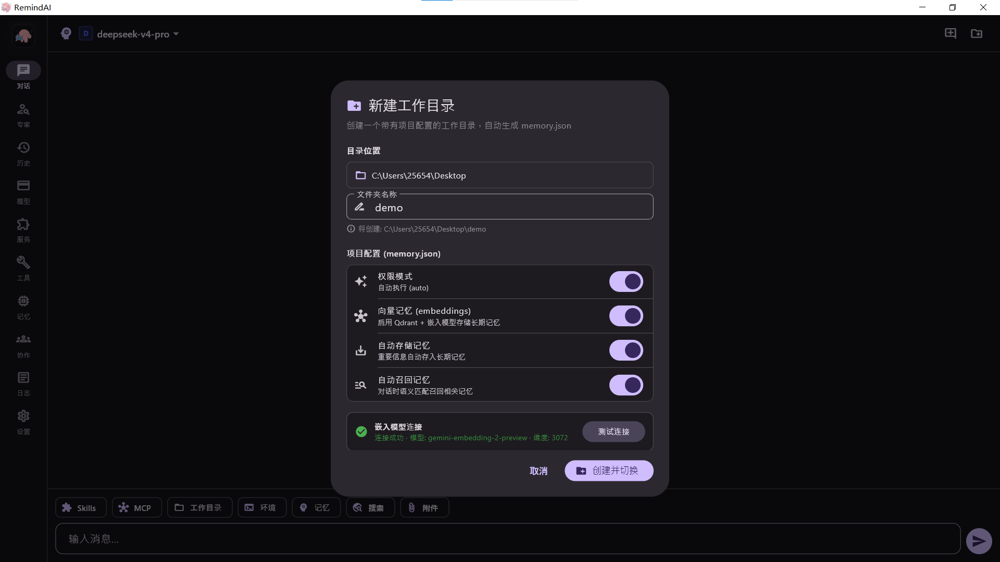
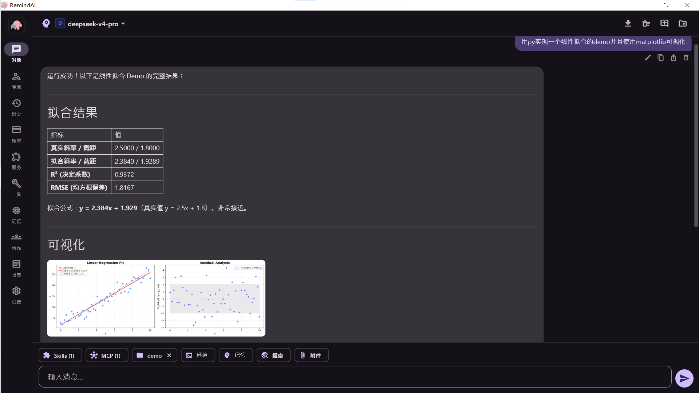
对话管理
- 支持多会话管理，可在左侧切换不同的对话
- 支持 Markdown 渲染，包括代码高亮、数学公式、表格等
- 支持拖拽上传图片，进行多模态图文对话
- 按 Enter 发送，Shift+Enter 换行（可在设置中切换）
工具调用展示
当 AI 调用工具时（如读写文件、执行代码），会在消息中展示可折叠的工具调用卡片，你可以展开查看具体参数和返回结果。
ToolShell — 工具外壳
ToolShell 是 RemindAI 的核心能力，它赋予 AI 一套完整的操作系统级工具，包括文件读写、Shell 命令执行、Python 运行等。AI 通过内置的「元技能」系统调用这些工具。
内置元技能
🔧 ToolShell 元技能
| 工具 | 功能 |
|---|---|
toolshell_read | 读取文件内容，支持指定行范围 |
toolshell_write | 写入文件（新建、覆盖、追加），自动创建父目录 |
toolshell_delete | 删除文件或目录 |
toolshell_search | 按文件名 glob 匹配搜索文件，可按内容过滤 |
toolshell_exec | 执行 Shell 命令（支持任意 CLI 工具） |
toolshell_run_python | 执行 Python 代码，自动捕获 matplotlib 图表 |
toolshell_memory_store | 存储记忆到向量数据库 |
toolshell_memory_recall | 从向量数据库召回相关记忆 |
📋 Schedule 元技能
Schedule 元技能让 AI 可以管理工作计划（SCHEDULE.md），支持 P0/P1/P2 优先级的任务 CRUD、审查和归档。包含 7 个工具：load、add_task、complete、update、delete、review、archive。
💻 System 元技能
System 元技能让 AI 可以探测你的系统环境，了解安装了哪些开发工具、运行时、包管理器等，从而做出更精准的决策。包含 system_probe 和 system_env 两个工具。
内置 CLI 工具
RemindAI 自带以下命令行工具，无需额外安装：
| 工具 | 用途 | 说明 |
|---|---|---|
rg | 极速正则搜索 | ripgrep，比 grep 快数倍 |
fd | 现代化文件查找 | 比 find 命令更友好 |
rtk | Token 压缩器 | 减少 60-90% 命令输出 token |
MCP 协议
MCP（Model Context Protocol）是一种开放协议，允许 AI 调用外部工具服务。RemindAI 支持三种传输方式，可以连接任何兼容 MCP 的工具服务器。
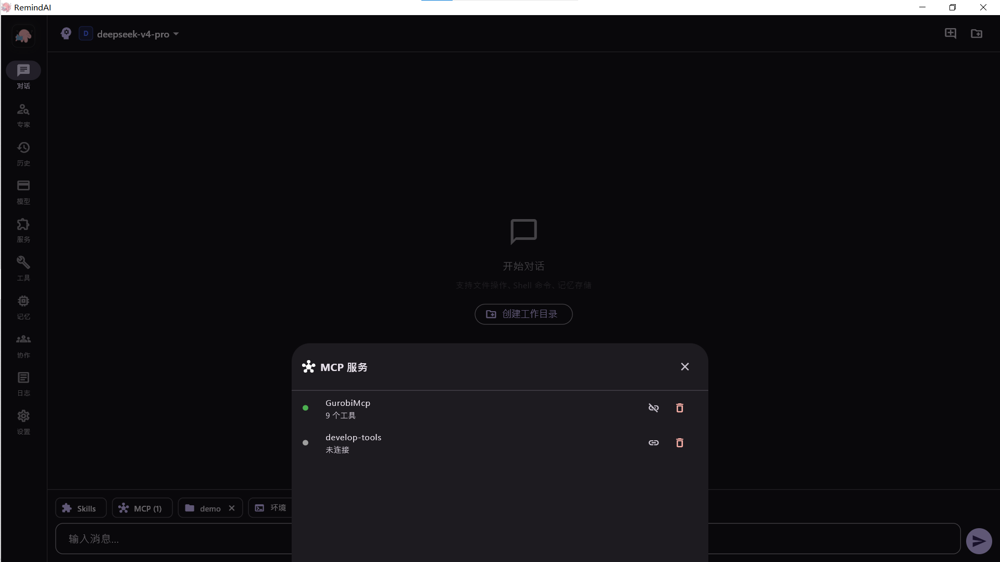
三种传输方式
| 传输类型 | 说明 | 适用场景 |
|---|---|---|
stdio |
通过标准输入/输出通信，启动本地进程 | 本地 CLI 工具、Python/Node.js 脚本 |
SSE |
Server-Sent Events，基于 HTTP 的长连接 | 远程服务、已有的 MCP SSE 端点 |
Streamable HTTP |
可流式传输的 HTTP 请求 | 新一代远程 MCP 服务 |
添加 MCP 服务器
进入 MCP 页面
点击左侧导航栏的「🔌 MCP」，然后点击右下角 + 按钮。
选择传输类型并填写配置
stdio：填写命令（如 npx）、参数（如 -y @modelcontextprotocol/server-filesystem /path）、工作目录、环境变量。
SSE / HTTP：填写 URL（如 http://localhost:3000/sse）和 HTTP Headers。
测试连接
保存后，点击卡片上的 🔗 按钮测试连接。连接成功后会显示发现的工具数量。状态指示灯变为绿色。
启用并使用
打开卡片上的启用开关，MCP 工具将在对话中自动可用。AI 会根据上下文自动决定何时调用这些工具。
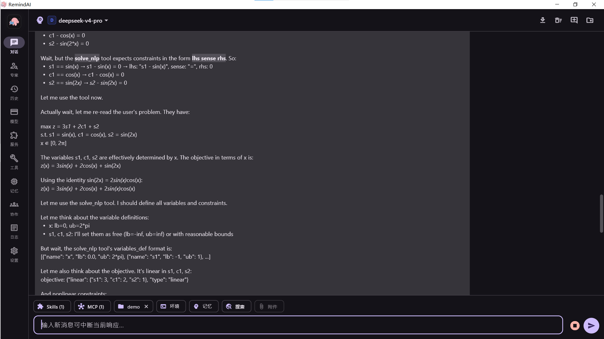
记忆系统
RemindAI 的记忆系统使用 Qdrant 向量数据库 + SQLite 持久备份的双写架构，让 AI 能够跨会话记住重要信息，并通过语义搜索精准召回。
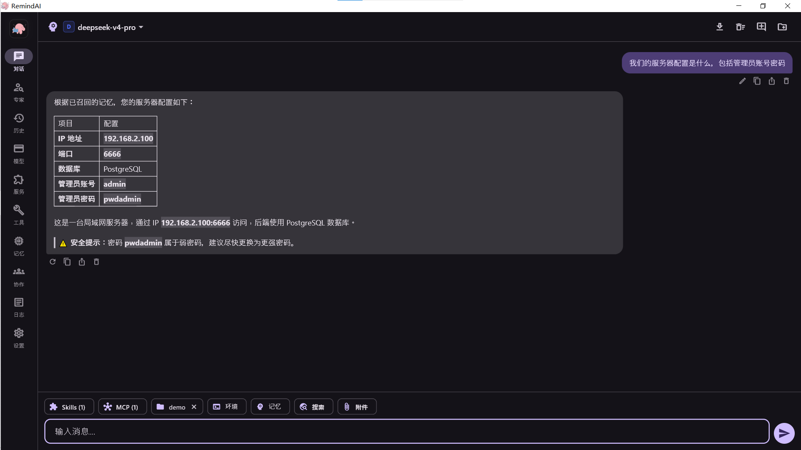
配置步骤
1. 安装 Qdrant
Qdrant 是记忆系统的向量搜索引擎。推荐使用 Docker 运行：
2. 配置嵌入模型
向量记忆需要嵌入模型将文本转换为向量。在「设置 → 嵌入模型」中添加嵌入模型配置：
- URL：嵌入模型 API 地址（如 OpenAI 兼容接口
https://api.openai.com/v1/embeddings） - API Key：对应的密钥
- 模型名：如
text-embedding-3-small、text-embedding-ada-002等
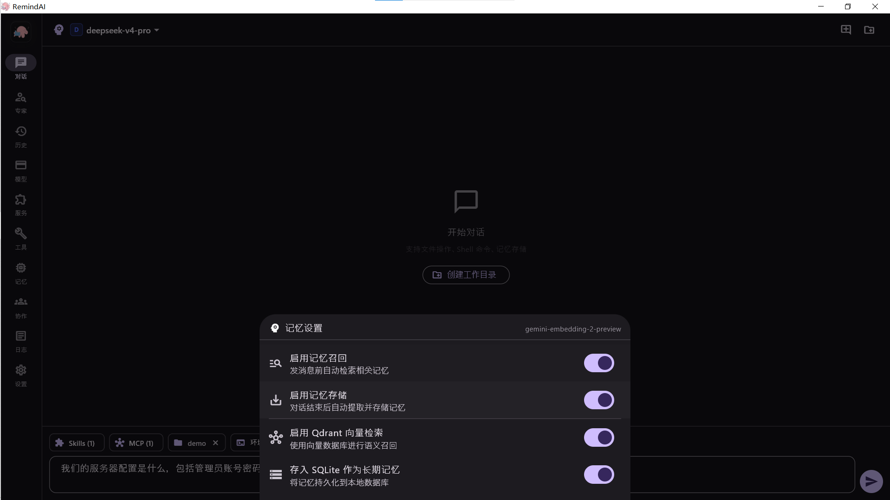
3. 使用记忆
配置完成后，记忆系统将自动工作：
- 对话开始时，AI 会自动召回与当前话题相关的历史记忆注入上下文
- 对话过程中，AI 会识别重要信息并主动存储到记忆
- 你可以在「🧠 记忆」页面查看、搜索和删除记忆条目
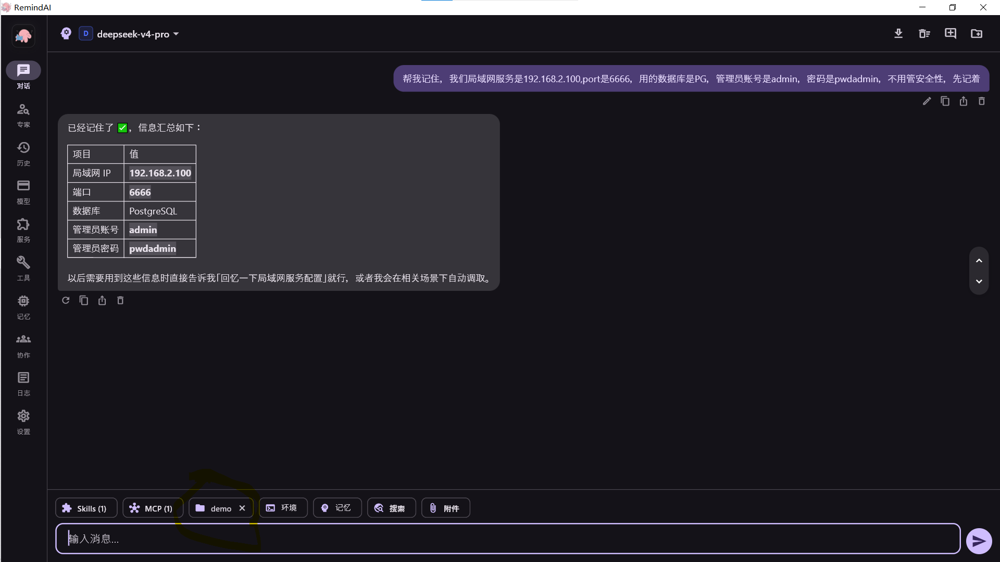
技能系统
技能系统允许你为 AI 添加额外的工具和能力。每个技能包含一个 SKILL.md（技能说明）和 tools.json（工具定义），打包为 ZIP 文件导入。
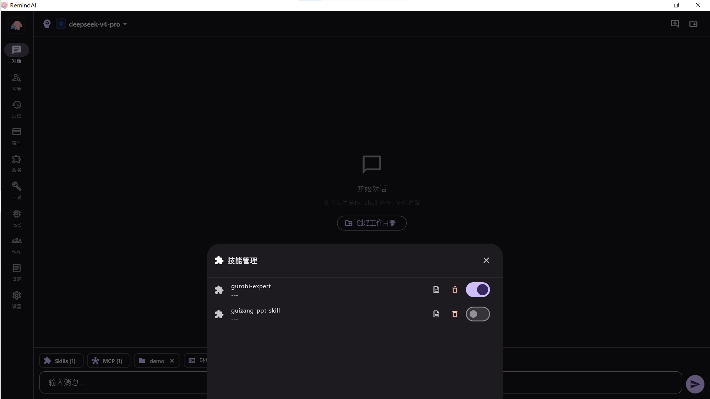
导入技能
获取技能 ZIP 包
从技能市场下载或自行制作技能 ZIP 包。推荐市场：Skills MP、Claud Skills、Skills.sh
点击导入
在「📦 技能」页面点击右下角 📤 按钮，选择 ZIP 文件导入。导入成功后会显示技能名称和工具数量。
启用技能
在技能卡片上打开启用开关。启用后，技能中的工具将注入到 AI 的工具列表中。
Web 搜索
RemindAI 支持三种搜索引擎作为信息获取能力（Capability），AI 可以在对话中自动搜索互联网获取最新信息。
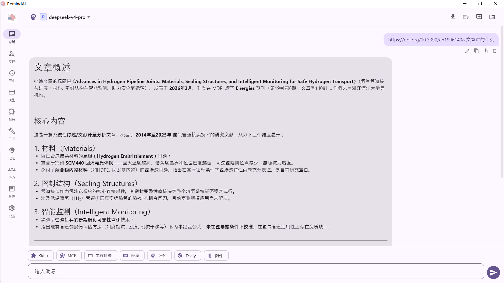
支持的搜索引擎
| 引擎 | 获取 API Key | 说明 |
|---|---|---|
| Tavily | tavily.com | AI 优化的搜索引擎，结果质量高 |
| Brave Search | brave.com/search/api | 隐私友好的搜索引擎，免费额度充足 |
| 百度智能搜索 | 百度开放平台 | 中文搜索效果最佳 |
配置步骤
- 前往对应搜索引擎注册并获取 API Key
- 在「🔍 搜索」页面找到对应引擎，输入 API Key
- 点击「保存」按钮
- 点击「测试连接」验证 Key 是否有效（测试成功会自动保存）
领域专家
领域专家是预设或自定义的 AI 角色，每个专家拥有独立的系统提示词（System Prompt）和可绑定的技能集。选择专家后开始对话，AI 将以该专家的身份回答问题。
内置专家
RemindAI 内置了多个预设专家角色，按类别分组：
| 类别 | 示例 | 说明 |
|---|---|---|
| 技术 | 代码审查、架构设计 | 专注于软件开发的技术角色 |
| 分析 | 数据分析、商业分析 | 专注于数据和业务分析 |
| 办公 | 写作助手、翻译 | 日常办公效率提升 |
| 创意 | 头脑风暴、文案创作 | 创意和内容生成 |
创建自定义专家
进入专家页面
点击左侧「👤 专家」，然后点击右上角 + 按钮。
填写专家信息
设置专家名称、描述、图标、分类和系统提示词。系统提示词将作为 AI 的人格设定注入对话上下文。
绑定技能（可选）
选择该专家应激活的技能，这样使用该专家时，只有绑定的技能可用。
开始对话
点击专家卡片，即可直接跳转到对话页面，以该专家身份开始交流。
API 服务
RemindAI 内置 HTTP 服务器，可以将自身暴露为 API 端点，供其他应用调用。支持三种端点模式。
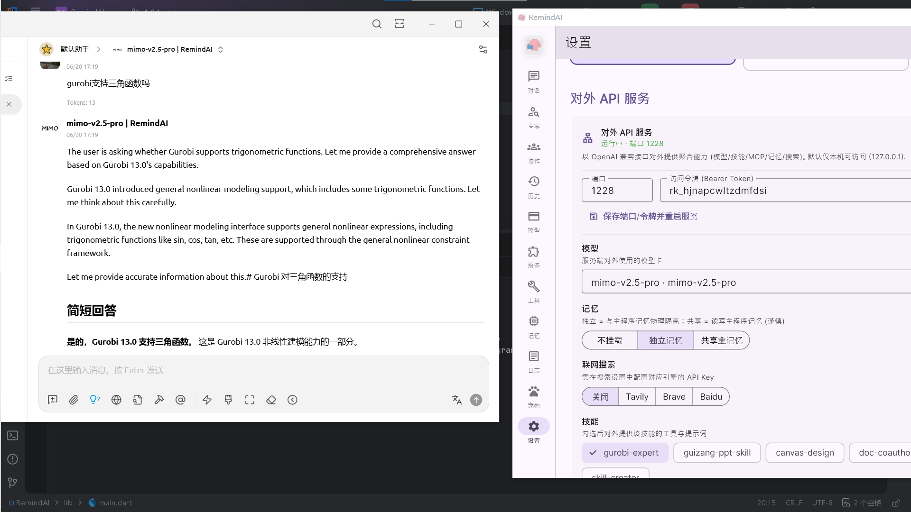
三种端点
| 端点 | 说明 | 适用场景 |
|---|---|---|
| OpenAI 聚合 | 以 OpenAI 兼容格式暴露，可聚合多个模型 | 其他 OpenAI 兼容客户端调用 |
| Claude Agent | 运行 RemindAI 自身的 AgentLoop | 需要完整 ToolShell 能力的场景 |
| Claude 代理 | 纯透传模式，直接转发到 Anthropic API | 作为 API 代理/网关 |
配置方法
- 在「🌐 服务」页面找到 API 服务区域
- 开启需要的端点，设置端口号和认证令牌（Token）
- 配置局域网安全设置（是否允许局域网访问）
- 对于 Claude Agent 端点，还可以绑定模型、技能、MCP 和记忆系统
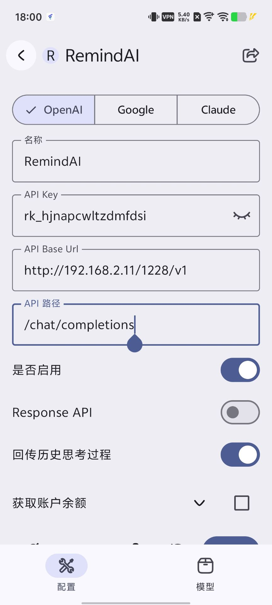
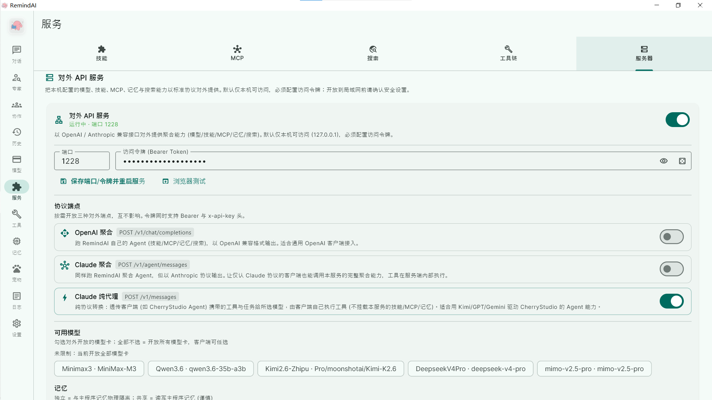
多 Agent 协作
多 Agent 协作系统允许你创建多个 AI 角色，它们各司其职、相互协作。支持指挥部（Commander）、工作者（Worker）、审查员（Reviewer）三种角色。
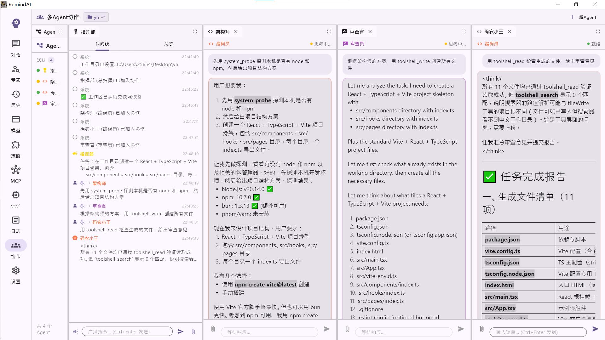
角色体系
- 指挥部（Commander）：负责任务分配、进度协调、最终决策
- 工作者（Worker）：执行具体任务，如代码编写、文件处理、研究分析
- 审查员（Reviewer）：审核产出质量，提出改进建议
宠物 Agent
宠物 Agent 是 RemindAI 的特色功能——一只陪伴你的像素猫！它不仅可爱，还拥有完整的经济系统和成就系统。
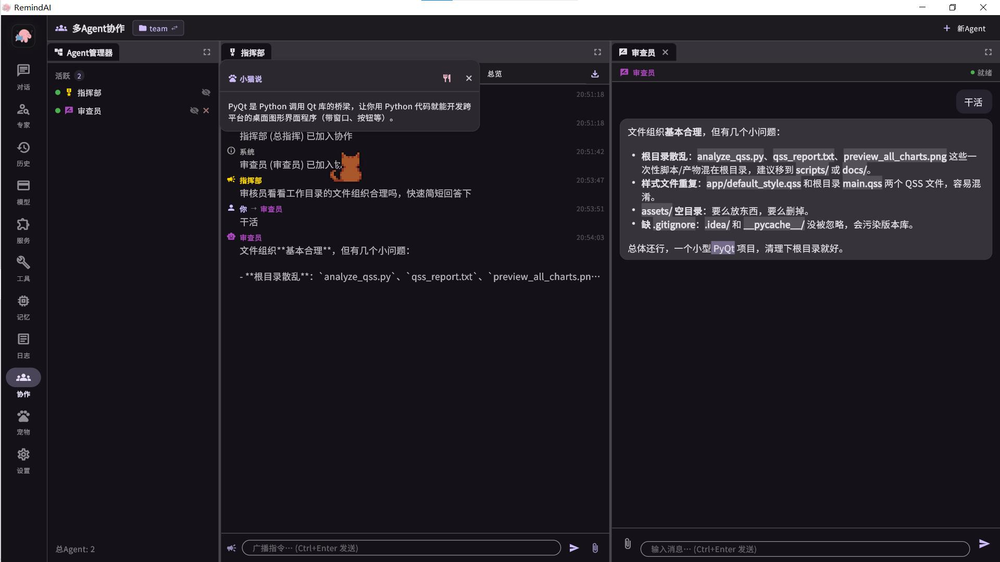
功能特性
| 特性 | 说明 |
|---|---|
| 🖱️ 右键问答 | 右键点击宠物，可以向它提问，它会用 TTS 语音回答你 |
| 🎙️ 火山 TTS | 集成了火山引擎 TTS，宠物可以用语音和你交流 |
| 🏪 商店系统 | 在宠物商店购买食物和道具 |
| 🍖 投喂系统 | 用食物喂养宠物，提升亲密度 |
| 🏆 成就系统 | 完成特定任务解锁成就徽章 |
| 🎁 奖励机制 | 完成任务获得金币奖励，用于商店消费 |
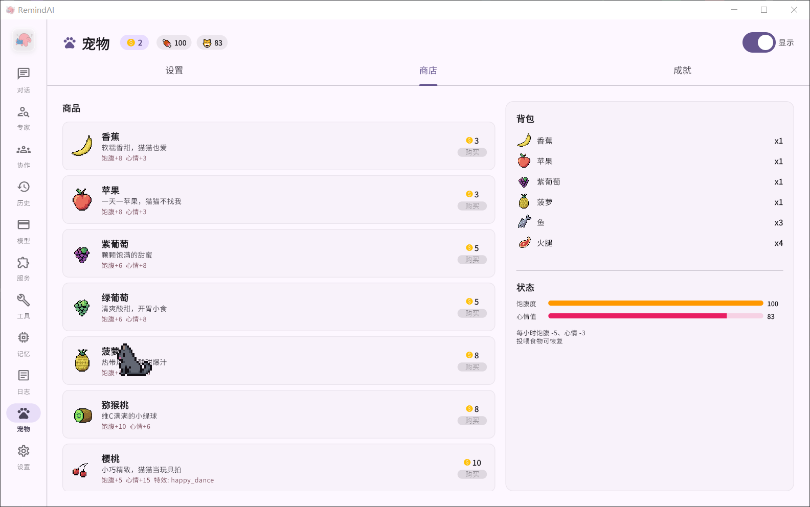
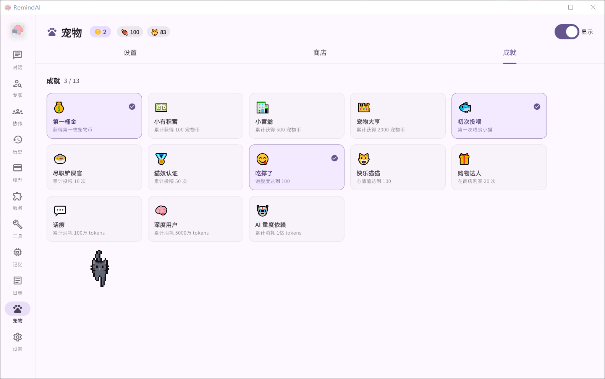
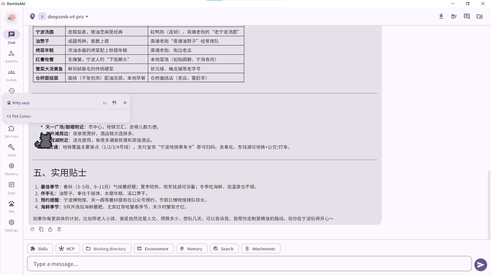
设置
设置页面包含所有全局配置选项，包括外观、语言、存储路径、工具路径、Qdrant、嵌入模型等。
外观
- 主题：支持亮色 / 跟随系统 / 暗色三种模式，切换时有涟漪扩散动画
- 主题色：紫色 / 绿色 / 蓝色 / 青色四种强调色可选
- 失焦通知：窗口不在前台时，AI 回复完成可弹出系统通知
- 回车键行为：发送消息 / 换行 — 按习惯选择
语言
支持中文 / 英文 / 跟随系统三种模式。RemindAI 完整实现了中英双语国际化。
存储路径
| 路径 | 说明 |
|---|---|
| 数据库路径 | SQLite 数据库文件位置（remind_ai.db） |
| 历史记录路径 | 对话历史记录的保存目录 |
| 技能路径 | 技能包的存放目录 |
| 日志路径 | 应用日志文件的保存目录 |
Qdrant 配置
如果 Qdrant 运行在非默认地址，可以在设置中手动配置连接路径。
Pandoc 路径
对话导出为 PDF/Word 时需要 Pandoc。RemindAI 会尝试自动检测，如果检测失败可以手动指定 Pandoc 可执行文件路径。
导出对话
你可以将对话记录导出为多种格式，方便分享和归档。
| 格式 | 说明 | 依赖 |
|---|---|---|
Markdown | 纯文本格式，可直接预览 | 无 |
HTML | 网页格式，保留样式 | 无 |
PDF | 适合打印和分享 | 需要 Pandoc |
Word | 可编辑的文档格式 | 需要 Pandoc |
常见问题
Q: AI 不响应或报错怎么办？
请检查：1) 是否已添加并设为默认模型；2) API Key 是否正确；3) Base URL 是否可访问（特别是使用第三方中转时）；4) 网络连接是否正常。
Q: 记忆系统显示「Qdrant 未运行」？
需要先启动 Qdrant 服务。推荐使用 Docker：docker run -d -p 6333:6333 qdrant/qdrant。如果使用自定义端口，请在设置中配置 Qdrant 路径。
Q: 对话导出 PDF/Word 失败？
需要安装 Pandoc。前往 pandoc.org 下载安装，然后在设置中配置 Pandoc 路径。
Q: MCP 连接失败？
请检查：1) stdio 类型的命令是否在系统 PATH 中；2) SSE/HTTP 类型的 URL 是否可访问；3) 是否需要特殊环境变量。可以在卡片上查看连接状态和错误信息。
Q: 如何使用第三方模型中转？
只需在添加模型时，将 Base URL 填写为中转地址即可。RemindAI 兼容所有 OpenAI 格式的 API，包括各种第三方中转服务。
Q: Linux / macOS 如何使用？
目前仅提供 Windows 安装包，其他平台需要从源码编构建。确保安装 Flutter SDK >= 3.12.1，然后按照「从源码构建」步骤操作。
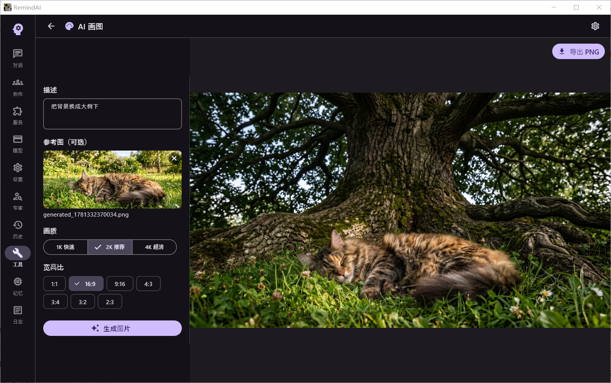
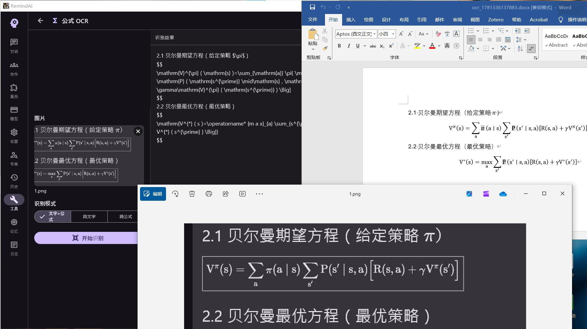
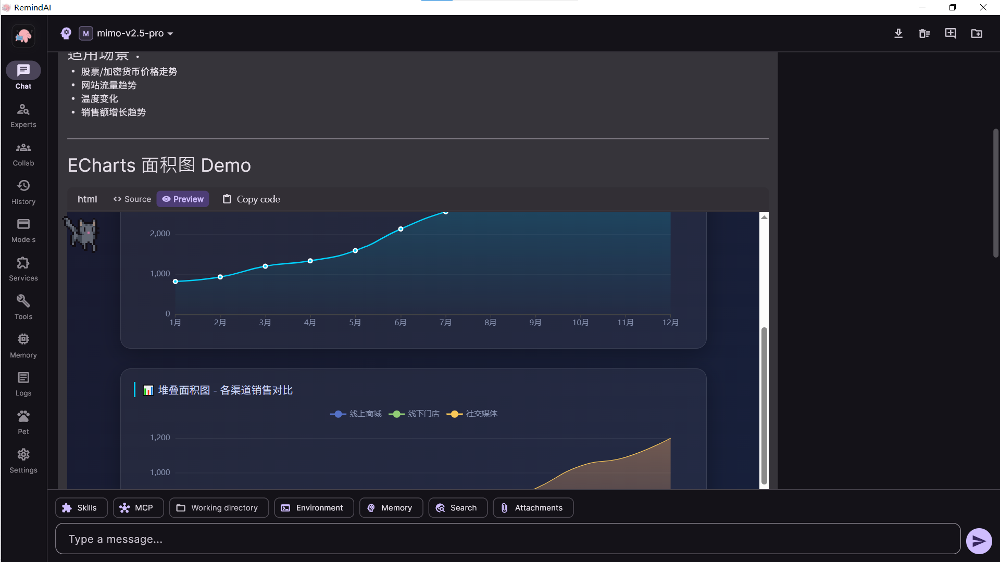